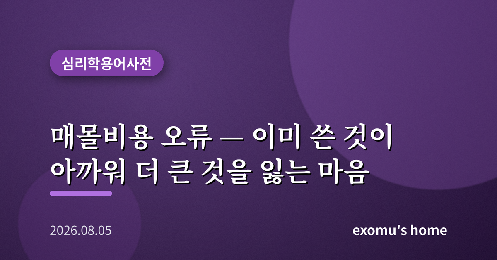
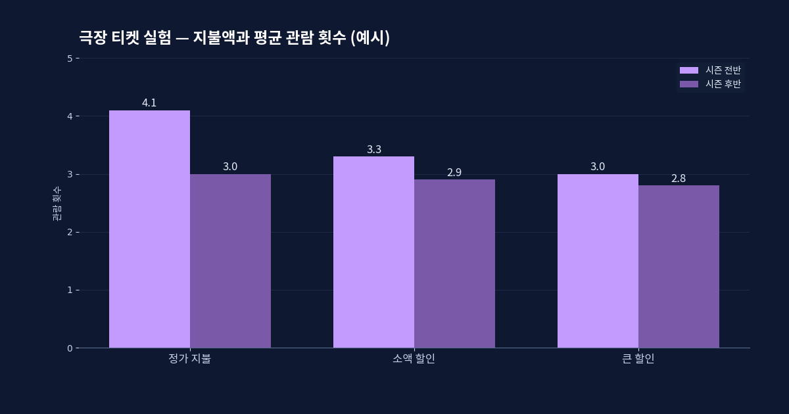
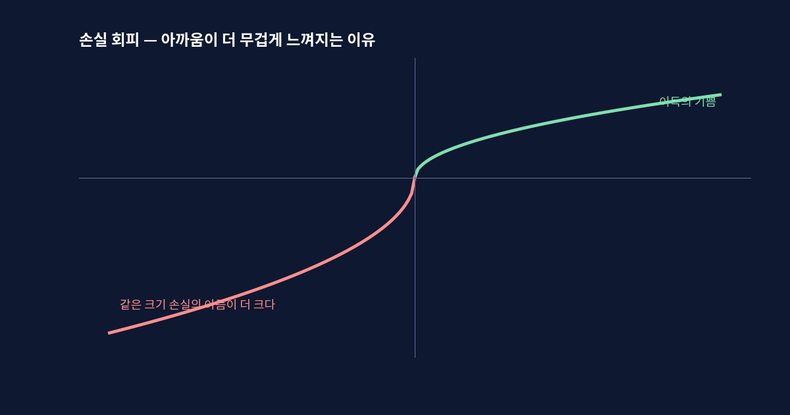
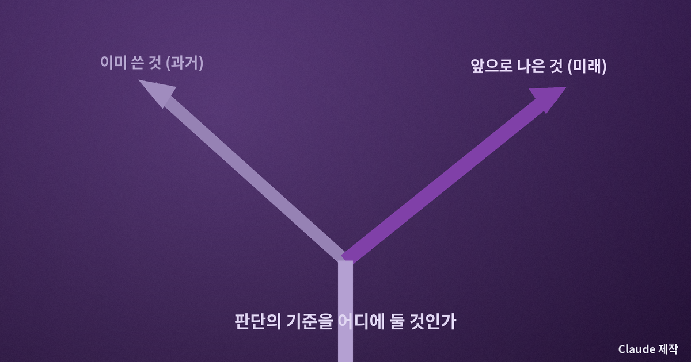
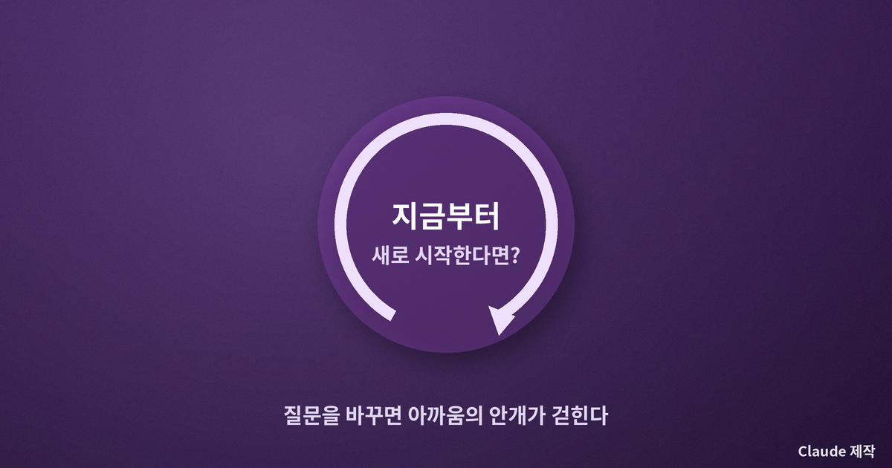

매몰비용 오류 — 이미 쓴 것이 아까워 더 큰 것을 잃는 마음

재미없는 영화를 끝까지 보는 이유
돈을 내고 들어간 영화가 삼십 분 만에 지루해졌다. 그런데도 우리는 자리를 뜨지 못한다. 표값이 아까워서다. 매몰비용 오류란 바로 이 마음을 가리키는 말이다. 이미 써 버려서 되돌릴 수 없는 비용, 곧 매몰비용이 아까워, 앞으로의 선택마저 그 방향으로 끌려가는 심리다. 합리적으로 따지면 표값은 이미 사라졌으니 지금 중요한 것은 남은 두 시간을 어떻게 쓰느냐뿐인데, 우리 마음은 좀처럼 그렇게 계산하지 못한다.
극장 티켓 실험이 보여 준 것
이 현상을 또렷하게 보여 준 유명한 연구가 있다. 1985년 심리학자 할 아크스와 캐서린 블루머는 한 극장에서 시즌 관람권을 사려는 사람들에게 무작위로 다른 할인을 적용했다. 어떤 이는 정가를 냈고, 어떤 이는 큰 할인을 받아 훨씬 싸게 표를 얻었다. 그 뒤 실제로 공연을 얼마나 보러 오는지를 살폈더니, 정가를 낸 사람일수록 초반에 더 부지런히 극장을 찾았다. 볼 수 있는 공연의 내용은 똑같은데, 오직 더 많이 지불했다는 사실 하나가 사람을 움직인 것이다.
연구자들은 이 성향을 매몰비용 효과라고 이름 붙였다. 흥미로운 점은, 이 오류가 동물 실험에서는 잘 나타나지 않는다는 것이다. 오직 사람만이 이미 들인 것을 아까워하며 미래의 판단을 그르친다. 아까움은 지능이 만들어 낸, 지극히 인간적인 함정인 셈이다.

콩코드라는 거대한 사례
매몰비용 오류가 얼마나 커질 수 있는지를 보여 주는 상징이 있다. 영국과 프랑스가 함께 만든 초음속 여객기 콩코드다. 개발 도중 이미 수익성이 없다는 사실이 분명해졌는데도, 두 나라는 여기까지 들인 돈이 아까워서 사업을 멈추지 못하고 계속 밀어붙였다. 이 때문에 매몰비용 오류는 콩코드 오류라는 별명으로도 불린다. 개인의 극장 표부터 국가의 초음속기까지, 규모만 다를 뿐 마음의 작동 방식은 똑같다.
왜 이런 일이 벌어질까. 밑바탕에는 손실을 유난히 크게 느끼는 인간의 성향이 있다. 이미 쓴 돈을 헛되이 날렸다고 인정하는 순간 그것이 손실로 확정되기 때문에, 우리는 그 확정을 미루려고 계속 매달린다. 그만두면 지금까지의 노력이 전부 무의미해진다는 두려움이, 사실은 더 큰 손실로 가는 문을 여는 것이다.

일상 곳곳의 매몰비용
이 오류는 극장이나 항공기에만 있지 않다. 몇 년을 투자한 전공이 맞지 않는다는 걸 알면서도 여기까지 왔는데라며 놓지 못하는 진로, 오래 사귀었다는 이유만으로 이어 가는 관계, 이미 많이 읽었으니 끝까지 봐야 한다며 붙잡고 있는 재미없는 책. 심지어 뷔페에서 본전을 뽑으려 배가 아플 때까지 먹는 것도 같은 마음이다. 공통점은 하나다. 판단의 기준이 앞으로 무엇이 나은가가 아니라 지금까지 무엇을 썼는가로 뒤바뀌어 있다는 것.

되돌릴 수 없는 것에서 눈을 떼는 법
벗어나는 첫걸음은 질문을 바꾸는 것이다. 여기까지 얼마를 썼지가 아니라, 지금 이 순간 아무것도 투자하지 않은 상태라면 나는 이것을 새로 시작할까라고 물어보는 것이다. 만약 답이 아니오라면, 이미 쓴 것과 상관없이 그만두는 편이 낫다. 과거의 지출은 어떤 선택을 해도 돌아오지 않기 때문이다. 이 질문 하나만으로도, 아까움이라는 안개가 걷히고 앞이 조금 또렷해진다.

또 하나의 방법은 그만두는 일을 실패가 아니라 정보의 갱신으로 여기는 것이다. 해 보기 전에는 몰랐던 것을 알게 되어 방향을 바꾸는 것은 어리석음이 아니라 배움이다. 아까움은 과거를 향한 감정이고, 좋은 결정은 언제나 미래를 향한다. 이미 지나간 것에 매이지 않고 지금 앞에 놓인 선택에 집중하는 것, 그것이 매몰비용의 함정에서 걸어 나오는 길이다. 되돌릴 수 없는 것에서 눈을 떼야, 비로소 바꿀 수 있는 것이 보인다.